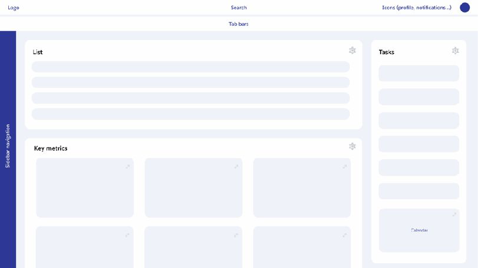
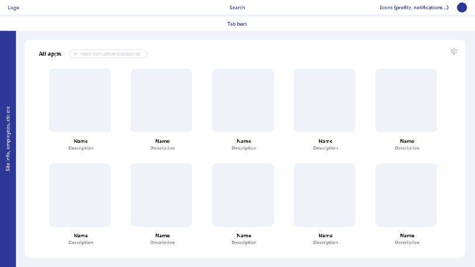
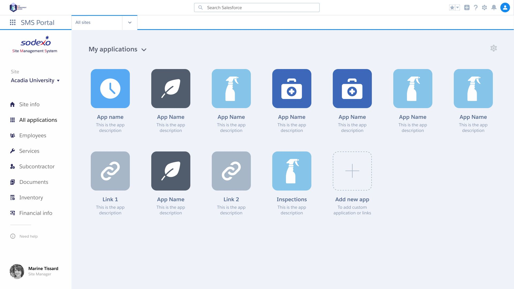
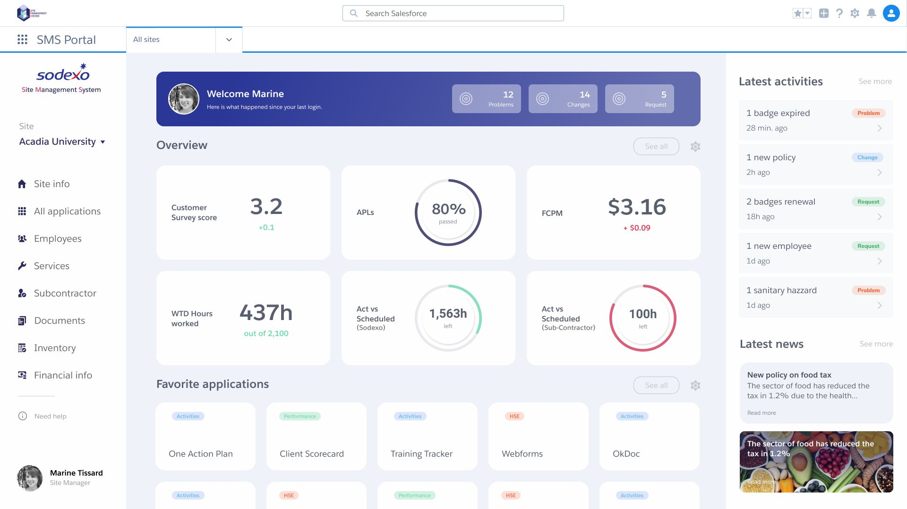

Redesigning the internal management system
How do you improve the performance of Sodexo's operational teams, in a constrained environment, against very high quality requirements?
The work
Rethinking site management through service design, and redesigning the user experience of the internal management system against what the teams actually needed and actually did with it.
- Role
- UX design
- Method
- User-Centred Design
- Impact
- Optimising performance, reducing friction, saving time and raising quality
The process
Five steps, each one feeding the next rather than running in parallel.
-
Heuristics
An evaluation and analysis of the system already in place, to see where it was failing on its own terms before asking anybody anything.
-
User interviews
Talking to the people running the sites, about the work rather than about the software.
-
Wireframes
Wireframes and medium-fidelity prototypes, enough to put in front of someone.
-
User testing
Testing those prototypes, and folding what came back into the next round.
-
Design system
A new design system, and the high-fidelity prototypes built from it.
Wireframes
Only the early wireframes are shown here. The high-fidelity prototypes and the design system built from them are confidential.



